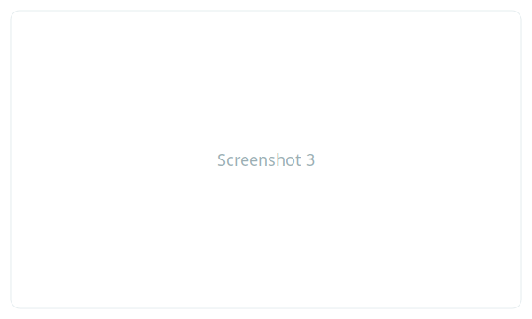

Self‑host your workout logs — keep control of your data
A simple, privacy-first workout tracker for CrossFit, strength training and gym owners. Deploy with Docker, use as a PWA, and import your CSVs.
WODs & Templates
Named WODs, reusable templates for fast logging.
CSV Import / Export
Bring your existing data or seed with sample CSVs.
PWA Ready
Installable on mobile — works offline for quick logging.
Everything you need to track workouts
Workout Logging
Quickly record WODs, sets, reps, weights and notes.
Templates & WODs
Create reusable workout templates and name WODs for quick selection.
Import / Export
Seed or migrate data using CSV imports and exports.
PWA
Installable mobile experience for offline logging and quick access.
Self‑hostable
Run on Docker Compose with PostgreSQL or MariaDB — full control over your data.
Analytics
Simple performance summaries, PR highlights, and streak tracking.
Deploy in minutes with Docker
ActaLog ships with a Docker Compose configuration to run the web frontend, API and database.
git clone https://github.com/johnzastrow/actalog.git
cd actalog
docker compose up -d
See the full instructions on the Deploy page.
App previews


Common questions
Can I self-host on a small VPS?
Yes — ActaLog is lightweight and runs on a single-node Docker Compose stack. Use Postgres or MariaDB depending on preference.
Is there a demo?
Not currently. You can run the Docker Compose stack locally to preview the app.
More Q&A on the FAQ page.